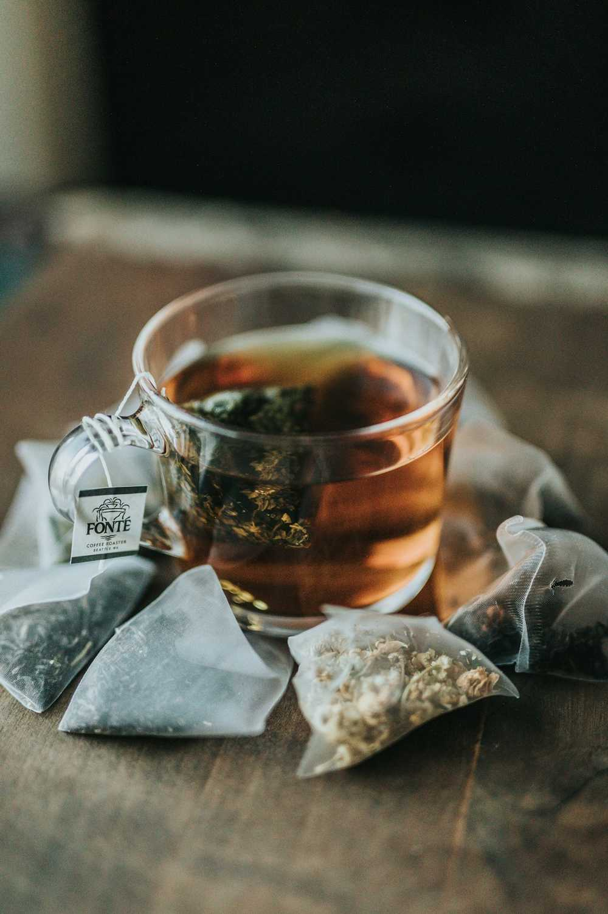
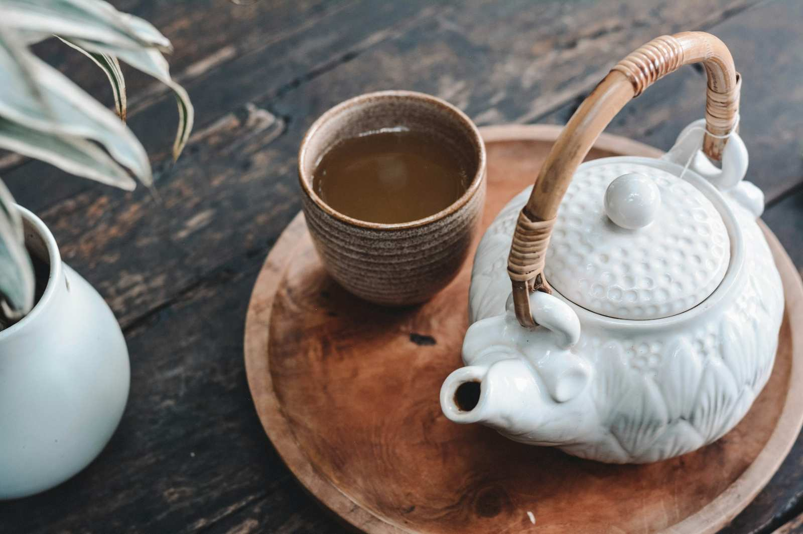
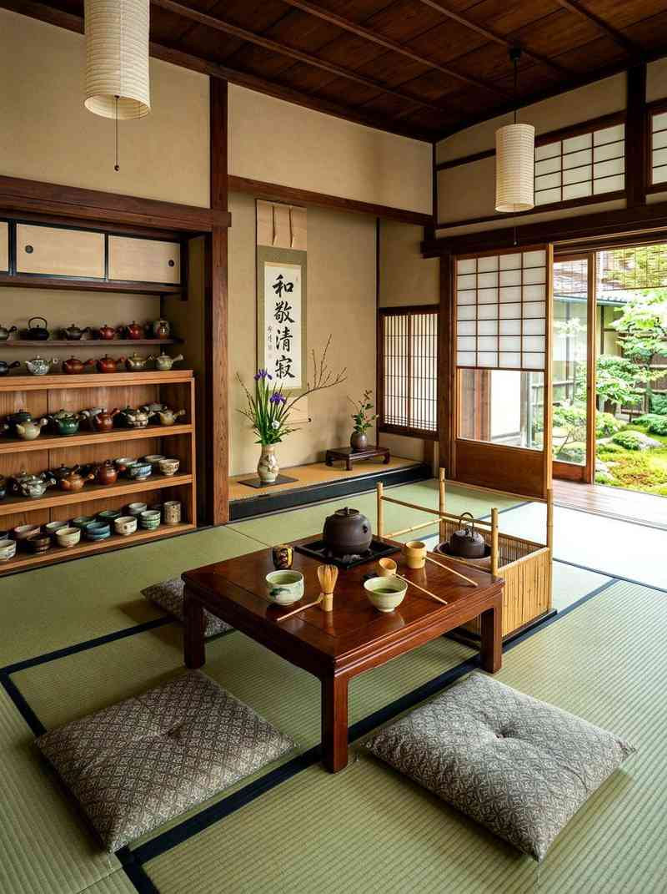
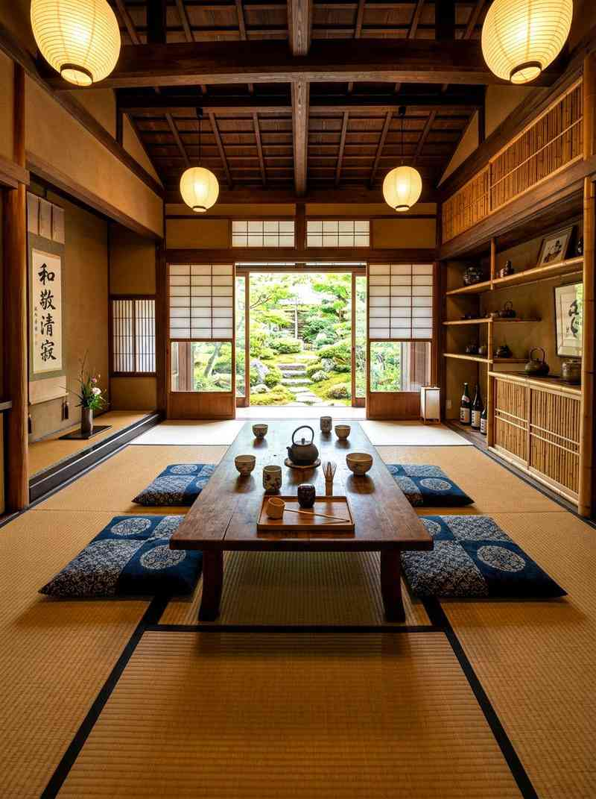
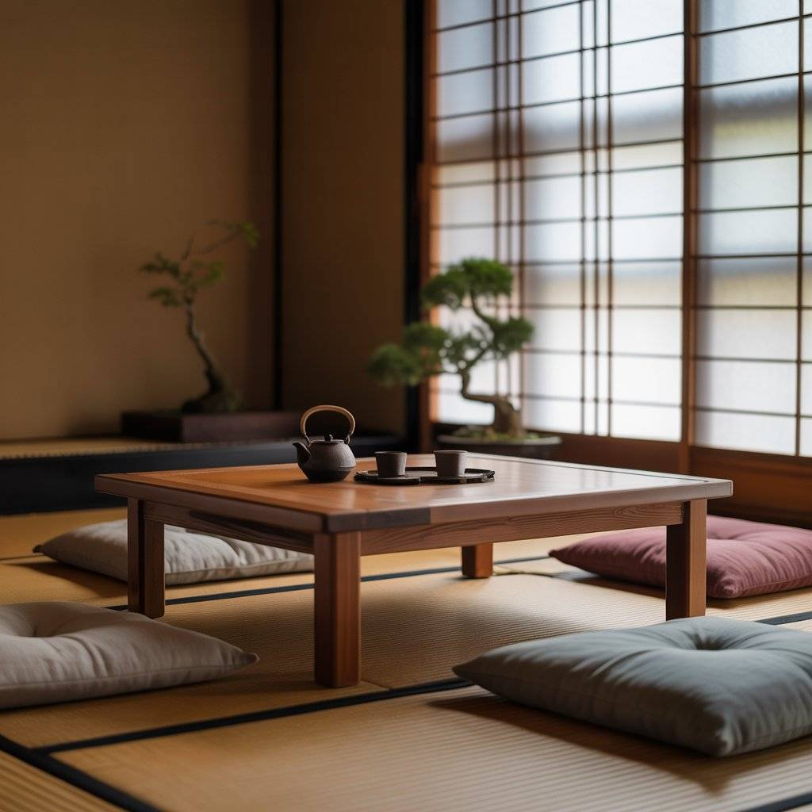

Trà sen
Sen tươi ướp trong lá trà xanh, hương thoảng nhẹ, hậu vị ngọt thanh.
từ 45.000đgiá mẫu

Một chén trà ngon, một khoảng lặng đủ đầy. Quán trà đạo theo tinh thần wabi-sabi — ít đồ đạc, nhiều khoảng trống, ánh sáng tự nhiên.
Đặt chỗTrầm Trà bắt đầu từ một niềm tin giản dị: một chén trà ngon không cần phô trương. Nước vừa đủ nóng, lá trà vừa đủ thức, người uống vừa đủ lặng — thế là đủ.
Quán lấy cảm hứng từ trà thất Nhật Bản tối giản: gỗ mộc, gốm thô, chiếu tatami và một khu vườn nhỏ ngoài cửa sổ. Mỗi buổi trà ở đây đều chậm rãi, không nhạc ồn, không vội vã.
Chúng tôi chọn trà Việt và trà Á Đông tuyển chọn, pha bằng ấm gốm và nước suối đun sôi để nguội đúng độ. Câu chuyện của quán cũng chỉ có vậy — và quán tin rằng vậy là đủ để khách quay lại.
Ba góc ngồi, ba nhịp thở khác nhau. Tất cả đều nhìn ra vườn, đều có chiếu tatami và bàn gỗ thấp.

Bàn trà thấp giữa phòng, cửa shoji mở ra vườn rêu. Góc này hợp với buổi trà một mình hoặc hai người muốn yên tĩnh tuyệt đối.

Đèn giấy ấm, bàn gỗ dài, đủ chỗ cho nhóm bốn đến sáu người. Buổi tối, ánh đèn là thứ duy nhất còn sáng trong phòng.

Ấm gang, đệm ngồi bệt, cửa sổ giấy đón nắng xiên. Góc nhỏ nhất quán, cũng là góc được đặt trước nhiều nhất.
Mỗi món đều có ấm riêng, pha tại bàn. Giá dưới đây là giá mẫu, sẽ chốt lại khi quán công bố thực đơn chính thức.
Lưu ý: mọi giá trên trang đều là giá mẫu. Giá chính thức do quán công bố sau.
Năm bước, không bước nào được vội. Người pha trà làm đúng từng bước trước mặt khách.
Tráng ấm chén bằng nước sôi để làm ấm dụng cụ và gột mùi cũ, rồi đổ bỏ nước tráng.
Cho lá trà vào ấm, lắc nhẹ và ngửi hương khô — lá trà bắt đầu “thức” trước khi gặp nước.
Rót nước đúng nhiệt độ, đậy nắp và chờ. Thời gian hãm tùy loại trà, thường từ một đến ba phút.
Rót đều tay qua từng chén, mỗi chén một lượng ngang nhau — chén nào cũng cùng một vị.
Ngửi hương, nhấp từng ngụm nhỏ, để vị trà tan chậm. Không nói to, không vội vàng.
Lịch buổi trà dưới đây là lịch mẫu. Form đặt chỗ và form liên hệ hiện chỉ là giao diện demo — chưa gửi dữ liệu thật.
| Buổi trà | Thời gian (mẫu) | Ghi chú |
|---|---|---|
| Trà sáng — Sen sớm | Thứ Bảy, 8:00 – 9:30 | Trà sen, tối đa 8 khách |
| Trà chiều — Ô long | Chủ Nhật, 15:00 – 16:30 | Trà ô long, tối đa 8 khách |
| Nghi thức trà đạo | Cuối tháng, 19:00 – 20:30 | Đủ 5 bước, cần đặt trước |